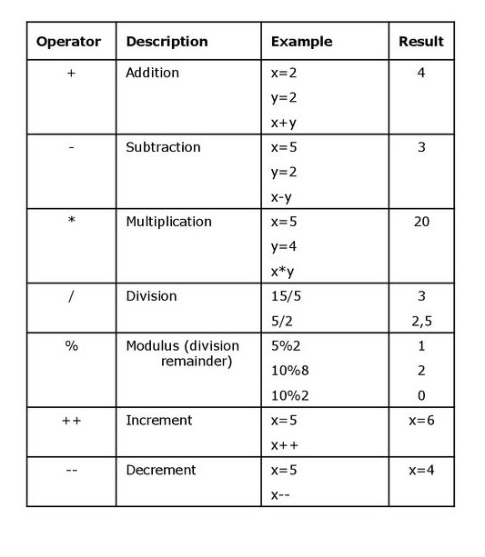
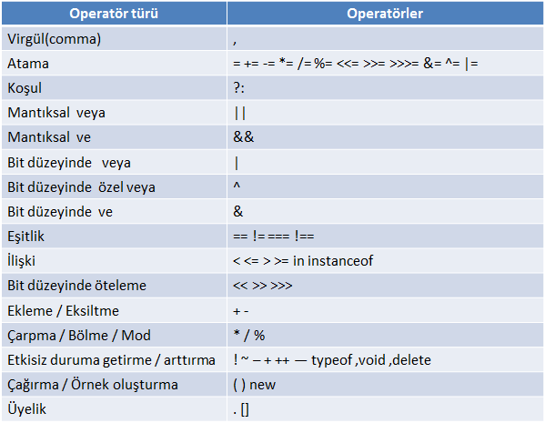

JavaScript Aritmetiği
JavaScript Aritmetik İşleçleri
Aritmetik işleçler sayılar üzerinde (değişmez değerler veya değişkenler) aritmetik gerçekleştirir.

Operatörler ve Operandlar
Sayılara (aritmetik işlemde) işlenen denir .
İşlem (iki işlenen arasında yapılacak) bir operatör tarafından tanımlanır .
Ekleme:İlave operatörü ( +) numaralarını ekler:
Çıkarma: Çıkarma operatörü ( -) sayıları çıkarır.
Çarpma :Çarpma operatörü ( *) çarpar sayılar.
Bölme :Bölme operatörü ( /) numaraları böler.
kalan :Modülü operatörü ( %) bölmede kalan döndürür.
Arttırım :Arttırma operatörü ( ++) numaraları artırır.
Eksiltim :Eksiltme operatörü ( --) numaraları azaltır.
Üs: Üs operatörü ( **) ikinci işlenen gücüne ilk işlenen yükseltir.
x ** y ile aynı sonucu verir Math.pow(x,y):
